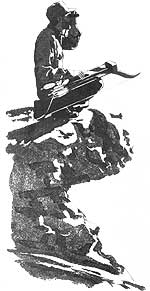
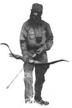
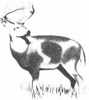

Issue # 113 - September/October 1988
Illustrations By Joel PopadicsBowhunting technology shouldn't supplant patience and concentration.
DURING COLORADO'S BOWHUNTING season for deer and elk each September, I put aside all else to spend every nonworking moment roaming the mountains and mesas near my rural home. My goal, of course, is to kill a deer or an elk. Maybe both. After a quarter century of practice, I'm tolerable good at it. The remainder of the year I study wildlife and its habitat and do what I can to help protect both.
Is this a moral contradiction? Am I a hypocrite for professing to care a great deal about the welfare of wild animals, then turning around, once a year, and preying upon them? To take the question further, were Teddy Roosevelt, John James Audubon, George Bird Grinnell, Aldo Leopold, Ernest Thompson Seton and others among our most important naturalists and conservationists hypocrites because they, too, were hunters? I think not. In fact, it was hunting that first awakened in these men, and in me, a deep and abiding love of nature.
Unfortunately, there's a growing trend among nimrods these days to rely on modern technology in an effort to make hunting as easy and certain as possible. To me, this seems a poor fit. In order to make my hunting as challenging, primitive and natural as possible-in short, an adventure-I eschew technological gadgetry and hunt almost exclusively with a bow and arrows. If some years I fail to fill the freezer, so be it, for the weather is halcyon during the early bow season, and the woods are lonely and quiet.
As a thoughtful predator armed with primitive hunting tools, I'm convinced that I'm playing a right and proper role in the natural scheme of things. It is, after all, we predators, human and otherwise, who have sculpted the incredible defenses of today's big game species. It's an essential relationship, as Darwin first explained.
Since the beginning, those prey animals that were born with or somehow acquired features that provided them with a survival advantage over others of their kind have tended to live and breed and pass on their superior (that is, better-adapted) genes. In the face of this competition, those individuals and species less qualified inevitably die out. Through this long, slow process gradually evolved one of the best-adapted defense organisms in the mammalian world-the deer. Simply put, there is no better eye-ear-nose package going. While a rifle hunter can often make clean kills at 200 yards and beyond, rare is the hunting archer who can unerringly handle shots much beyond 40 yards. The name of the bowhunting game, therefore, is getting close. And to get close to deer, the hunter must come to understand and strive to defeat this remarkable animal's superb senses.
Sense Sense
Vision: Deer see differently than we do. Not necessarily better. Certainly not worse. Just differently.
Your eyes and mine are set at the fronts of our heads and some two-and-a-half to three inches apart, pupil to pupil. This arrangement has each eye viewing an object from a slightly different angle, providing us (and most other predators) with binocular vision. In its turn, binocular vision makes possible the depth perception so important to hunters, human and otherwise; whether you're a mountain lion about to spring at a passing deer or an archer aiming a bow, it's essential to have an accurate sense of the distance to your target. On the down side, our frontset eyes severely limit peripheral, or side, vision.
Since a major threat to deer and other prey species is the lurking possibility of predators sneaking in from the sides or rear, their eyes are positioned on opposite sides of their heads, giving them almost wraparound vision. This is ideal for defensive scanning, but precludes viewing a distant object simultaneously with both eyes, robbing deer of accurate depth perception.
The bowhunter's primary concern is to minimize and conceal all movement.
No matter. The deer has not been cheated. Among prey species, visually determining the distance to an object isn't nearly so important as knowing if, when and how that object moves. And the eyes of deer are sensitive to the slightest movement. Too, the deer's big, top-set ears swivel to receive sounds in stereo, much as our eyes receive images, providing a sense of audio depth perception. Thus, if something within the deer's extremely wide field of vision moves, even slightly, the ever-alert animal will spot that movement. And if the mover makes any sound, such as a rustling of leaves, the deer's radar-like ears will provide an instant fix on the range.
What all this means to the bowhunter is that the primary caper for avoiding visual detection by deer is to minimize and conceal all movement.
There's disagreement among scientists as to whether deer can discern colors, and, if so, how well. But there's no argument that clothing of bright hues, especially in solid patterns that outline the human form, make a hunter far more visible than do natural patterns and colors that melt into the surroundings. Therefore, the serious bowhunter will wear full-body camo and stay in cover and out of the open, in the shade and out of the sun, keeping all movements slow and quiet.
Hearing: In the forest, there are sounds and there are sounds. Other than the alarm cries of birds, the scoldings of startled squirrels and occasional rustlings in the brush as small animals flee our approach, the woods generally seem pretty quiet as we tramp through them. But sit down and remain perfectly still for a few minutes, and the forest quite literally comes alive. Birds sing, chirp and flit about. Small animals hop, scurry and chatter. Water talks. Winds sigh in the trees. Limbs break, fall and strike the forest floor with a rattle of dry leaves. These sounds and many others are natural and almost constant parts of the "silent" woods, and generally don't alarm wildlife.
However, the rhythmic crunch, crunch of heavy footfalls, the loud crack of a dry fallen limb being stepped on, a splash in quiet water, one rock being kicked against another-all such unnatural sounds serve to put wildlife on the alert. And any sound distinctly human, such as a cough, sneeze or spoken word, is cause for instant flight.
To avoid detection by a deer's big wonderful ears, then, slow down. Wear soft-soled footwear and soft, natural-fiber clothing that doesn't rustle, whine or whistle when you walk (wool and brushed cotton both are good). Watch where you place your feet. If the air is moving, even slightly, work into the flow, since a facing breeze will help cover any small sounds of your coming and wash to the rear your human stench.
Smell: To deer, we stink. Although no one has yet determined exactly how much more sensitive a deer's nose is than yours or mine, pragmatic evidence indicates that the difference is striking. The only sure way to avoid being scented is to keep downwind of your quarry. Many times, this is in fact possible. But due to the capriciousness of thermal drafts and the flow-disrupting influences of vegetation and terrain features, breezes don't always blow steadily from one direction, often shifting and swirling in confusing patterns. Therefore, while experienced bowhunters always strive to keep the wind in their faces, they also take care to minimize their personal odors. Just in case.
Game-alarming human odors have but two sources: natural body secretions, and the smelly substances we come into contact with daily. When possible (which, in practice, is rarely), begin your hunting day by bathing thoroughly with an unscented soap or, better, with one of the "no scent" soaps available at sporting goods stores. Afterwards, skip the flowery deodorants, powders, lotions and aftershaves. Rather, dust down with baking soda, which is odorless and will help keep you dry while absorbing and neutralizing body odors.
Likewise, your hunting clothes should be kept clean and fresh, and stored well away from cooking, tobacco or automotive odors. Some bowhunting nuts (myself included) go to the extent of partially filling a cardboard box with fragrant vegetation collected during preseason scouting forays into the area they plan to hunt-pine needles, sage or whatever-then storing their hunting garments and boots therein before and between hunts.
Some purists "borrow" a scent by storing their garments in vegetation.
Watch what you eat before going out. Be especially careful with smelly breakfast meats like bacon, sausage and ham. Don't cook while wearing your hunting clothes or lounge around in them at night. Wash your face and hands and brush your teeth after eating. Sniff=check snack foods before packing them along. Booze on the breath (and oozing from the pores) is a real turnoff, not only to wildlife, but to game wardens, other hunters and the general public.
The manufacture and marketing of commercial hunting s cents has become big business of late, and understandably so: It's oh so much easier simply to sprinkle on a few drops of a "cover" scent than to go through all the rituals just described. And then there are the pheromonal "attractor" s cents purported to lure in rutting bucks.
When used correctly (that is, stingily) under favorable circumstances (clean hunter, clean clothes), cover s cents can in fact help hide human odors, while attractor s cents do have the potential to attract deer. But too many hunters these days rely too heavily on s cents, neglecting cleanliness, wind direction and other time-proven predatory basics. In an activity as inherently primitive as bowhunting, technology will never supplant patience and attention to detail.
Tactics
Sitting perched on an elevated platform secured in a tree overlooking the intersection of two or more well-used game trails is generally the most productive method for bowhunting whitetail deer in hardwood forests. While "tree standing" can also be effective for mule deer, elk and other big-game species, it's the whitetail's predictability traveling the same trails to and from feeding areas at about the same times every day-that make it particularly susceptible to this type of hunting. I killed my first whitetail just this way, a plump doe that walked smack under the big oak in which I was perched sidesaddle on a lower limb. I was 18 at the time.
Books have been written on the subject of tree standing, but the basics are these: Locate a hospitable tree overlooking a trail intersection, watering hole, feeding site or other area that fresh sign indicates deer are using regularly. Then, well ahead of the hunting season, erect a sturdy platform in that tree, one with a seat and nearby hooks or nails for hanging bow, day pack and other necessities. Rarely will such a stand need to be more than 15 feet or so above the ground.
The whitetail's predictable daily schedule makes it susceptible.
You'll most likely need to rig some sort of steps-boards nailed to the trunk at convenient intervals or spikes driven in-to allow safe and easy access to and from your stand. Or you can purchase one of the myriad models of commercial tree stands, some of which are "self-climbing."
With your platform in place, remove any limbs and branches that obstruct your vision, that interfere with your ability to draw and shoot comfortably, or that might deflect the flight of an arrow. Finally, study the terrain, winds and sign in order to determine the best direction from which to approach your tree before daylight during hunting season. You don't, for example, want to cross the very game trail along which you expect deer to travel, nor is it productive to approach from an upwind direction and spread human scent about the area you intend to watch.
It's best to bring along a plastic bottle to urinate in (you don't want the ground around your tree smelling like an outhouse), and a length of stout cord with which to hoist your bow and other gear after you're safely aboard. Use the same cord (or better yet, a nylon safety belt) to tie yourself loosely to the tree.
Primary among the advantages of hunting from an elevated stand are these: Deer rarely look up, making drawing, aiming and other movements far less noticeable; your scent will tend to rise and be carried away; and your field of vision is greatly increased.
In addition to the possibility of falling out of your tree, the disadvantages of hunting from an elevated stand include the work of erecting the platform, or, if you buy a commercial unit, the purchase expense and the hassle of toting the thing around, putting it up and taking it down. For these reasons and others (notably, a dislike of heights and the cold winds that often come with them), many hunters prefer ground blinds.
On the ground you have to be more careful about movement, sound and wind direction, but are not nearly so tied (literally) to just one spot as when hunting from a tree. A ground blind can be as quick and simple as a strategically located clump of brush in which you hunker down for a spell of watching and waiting. Or it can be as complex as a semipermanent structure built of plywood or other wind- and weatherproof materials. I generally opt for something in between, cutting and rearranging brush and limbs to improve the existing natural cover. The past two years in a row I've arrowed mule deer from just such a makeshift blind.
A second time-tested hunting tactic, especially in the big open regions of the West, is spotting and stalking. This typically involves using binoculars or a spotting scope to locate game from afar, then attempting to sneak to within shooting range without being detected. This is a tremendously popular method of hunting open-country mule deer with a rifle, when reliable shots can be made at long ranges, but is far less productive for archers, most of whom must close to within 20 or 30 yards to be sure of making a clean, killing shot.
Still hunting (frequently confused with stalking) is the primitive predatory art of moving like a ghost through the woods, your senses hair-trigger alert, trying to spot game before it spots you. My first whitetail buck fell to this technique along the brushy rim of an Oklahoma farm field. This is among the most challenging and exciting ways to bowhunt, but rarely the most productive.
In the beginning, it's best to stick to basic predatory techniques.
You may have heard of rattling, calling, scraping or other high-powered deer hunting techniques in vogue of late. While all can produce good results, they can also backfire, often scaring away more game than they attract. In the beginning, at least, I strongly recommend sticking to the basic techniques of sitting on stand, stalking or still hunting. If your preseason scouting has been thorough, your equipment is tuned, your shooting skills are together and you can control the natural human tendency to impatience, you will succeed. Eventually.
When pondering which of the three basic techniques to employ in a given situation, consider the following variables:
Your personality: Some hunters are sedentary by nature, preferring to sit like camouflaged Buddhas from dark to dark in a clump of brush or up a tree, scrutinizing one little patch of terrain for the appearance of game. Others get the jitters when they try sitting still for more than a few minutes at a time, preferring instead to move, to explore, to see what's just over the next hill, and the next.
Time of day: Deer are most active, visible and vulnerable during those magical transition zones between darkness and light, light and darkness, holing up through midday. Knowing this, it's often most productive to take a stand morning and evening, and stillhunt through likely bedding areas during midday.
Your movement skills: Can you slow yourself down enough to slip through the woods in absolute silence, or are you one of those who, no matter how sincerely they may try, still manage to kick every loose rock, trod upon every fallen branch and stumble over every exposed root?
Terrain: Some areas are a joy to still-hunt through, others are nightmares.
Weather: On warm autumn afternoons when the forest floor is carpeted with pretzeldry pine needles or leaves, still hunting is largely a waste of time. But in early morning, before the sun has warmed enough to evaporate the night's dew, the same ground often can be covered in relative silence.
Then there are those wet, blustery, generally miserable days when cold rain trickles down the back of your neck and your new waterproof boots prove not to be, fickle winds swirl madly about, and you long for shelter and comfort. Such days are perfect for still hunting. The moisture softens and quiets ground debris, while the patter (or drone) of rain, often accompanied by wind singing (or howling) in the trees, helps cover the sounds of your movements and confound or at least confuse a deer's senses.
My own standard approach combines all three techniques and is adaptable to all types of terrain and weather, and to all my moods. When the woods are damp and quiet and the wind is cooperative and I feel like moving, I still-hunt. But my idea of still hunting is slow motion in the extreme; when I'm working well, I'll cover no more than two or three miles in a long day, taking a couple of slow, careful steps, then stopping for a good hard look and listen. When I come to a particularly promising spot, or if the urge strikes for whatever reason, I'll search out good cover and have me a nice long sit, hoping that an animal may wander past within bow range or present itself at a distance for a stalk. Eventually-perhaps 10 minutes, maybe an hour-I'll rise and move slowly on again until coming to another promising (or merely enchanting) waiting place. That place may be half a mile on, or just far enough to offer a fresh view. In dry times when it's impossible to move quietly, I've spent as long as 14 hours hunkered down in a ground blind. Only rarely do I climb trees these days.
After this flexible fashion I'm certain to enjoy my days afield, whether I bring home the venison or not. And when I am blessed with a close, clear shot, I know that my equipment is tuned, my broadheads razor-sharp and my shooting skills honed from months of directed practice.
Practice. Now that's another story.
Editor's Note: This is the second article in our introduction to bowhunting. Part 1, a discussion of gear, appeared in MOTHER No. 108, Nov./Dec. 1987.
|
Joel Popadics |
 Joel Popadics |
 Joel Popadics |
|
 Joel Popadics |
|
|